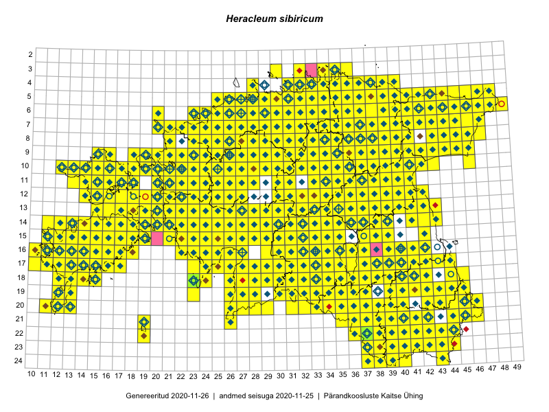

Heracleum sibiricum
Uuendatud: 2016-12-02
Kaardile koondatud taksonid: Heracleum sibiricum L.

Kaart põhineb 1003 vaatlusel. Taksonit on leitud 472 ruudust.
Kuvatud viited 20 esimesele andmebaasikirjele, ülejäänud PlutoFis
- Malle Leht: 2015-05-22: : ala
- Malle Leht: 2015-07-09: : ala
- Peedu Saar, Timo Luhamäe: 2015-05-10: 12-32: ala
- Toomas Kukk: 2015-06-23T14:30Z: 21-45: ala
- Peedu Saar, Liina Oja: 2015-05-20: 18-27: ala
- Malle Leht: 2015-08-02: : ala
- Peedu Saar, Liina Oja: 2015-05-21: 16-24: ala
- Peedu Saar, Liina Oja: 2015-05-15: 16-23: ala
- Peedu Saar, Liina Oja: 2015-05-21: 16-25: ala
- Peedu Saar, Liina Oja: 2015-05-20: 18-26: ala
- Peedu Saar, Toomas Kukk: 2015-05-28: 10-15: ala
- Toomas Kukk, Eerik Leibak: 2015-08-09: 14-15: ala
- Toomas Kukk, Eerik Leibak: 2015-08-08: 15-18: ala
- Toomas Kukk, Peedu Saar, Kersti Tambets, Sten Mander, Janika Sammasto: 2015-08-05: 17-14: ala
- Toomas Kukk, Eerik Leibak: 2015-08-12: 10-17: ala
- Toomas Kukk, Indrek Tammekänd: 2015-05-09: 14-27: ala
- Peedu Saar, Toomas Kukk: 2015-05-26: 10-16: ala
- Peedu Saar, Toomas Kukk: 2015-05-26: 10-17: ala
- Rein Kalamees, Kersti Püssa: 2015-08-31: 04-32: ala
- Tiit Hallikma, Toomas Kukk: 2015-07-21: 05-45: ala